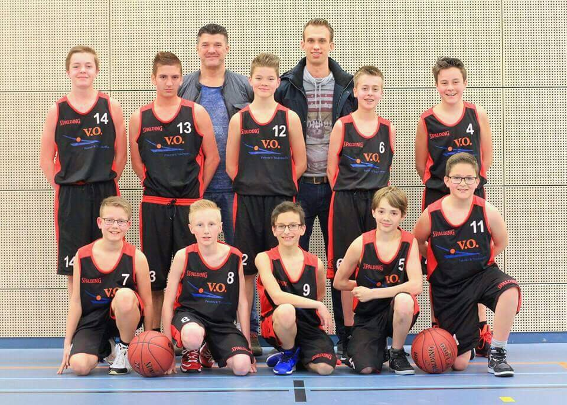

Ik zit op basketbal en ik speel bij BC Waldric(een basketbalclub in Woudrichem). Ik speel Basketbal voor Ongeveer 10 jaar, dus sinds ik 6 jaar oud was. Mijn hobby's zijn gamen en wandelen met muziek aan. Ik ben ook een fan van voetbal kijken. Ik ben een groot fan van PSV en landelijk voor Nederland en Bosnie. Waarom ik een fan van bosnie ben? Omdat mijn vader uit bosnie komt.
Dit is mijn basketbalteam.
De site van mijn basketbalclub vindt je als je hier klikt.